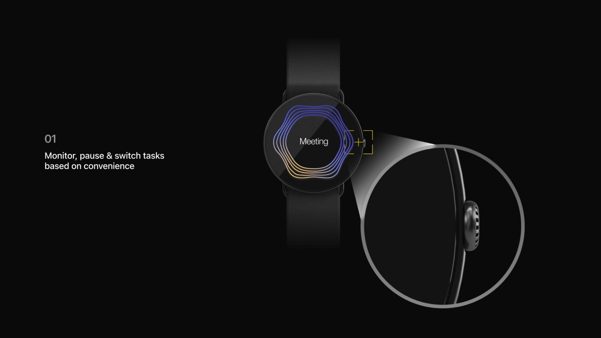
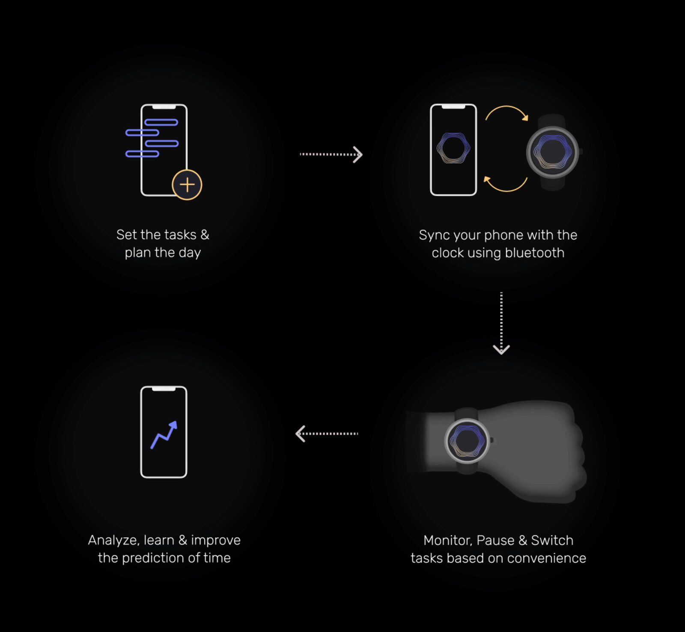
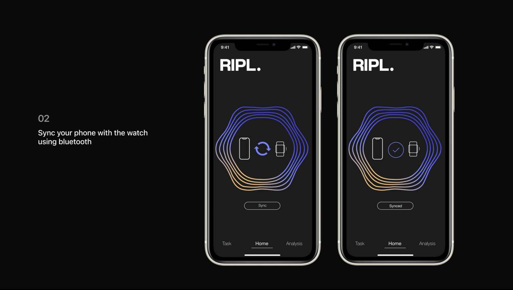
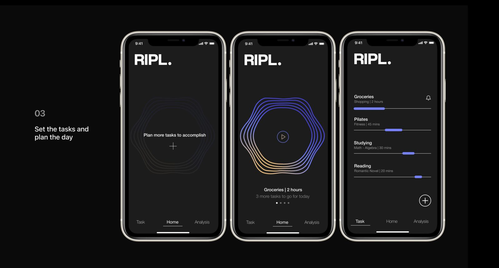
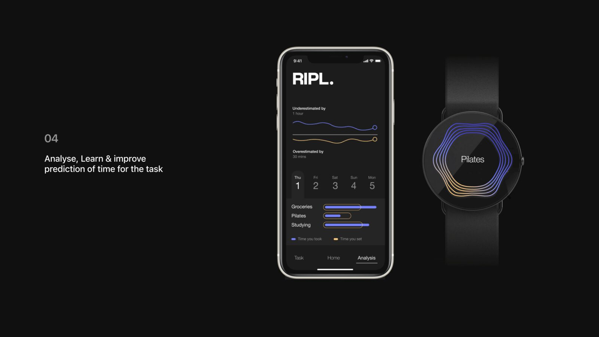
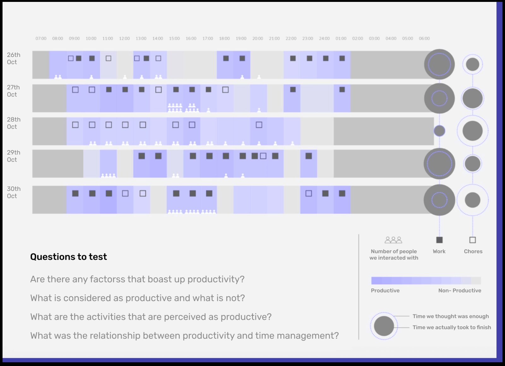
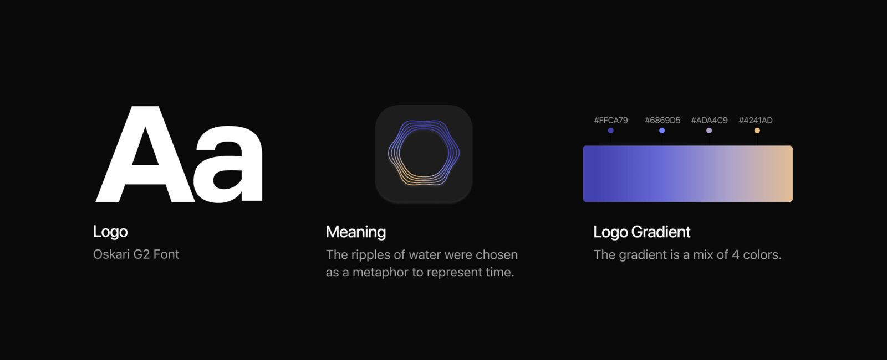
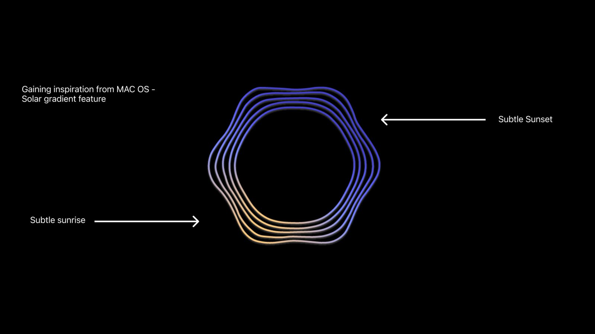

Case study
RIPL
A watch and app that help you stay with a task by taking the clock out of the way, while quietly sharpening how well you judge time.

Watching the clock while you work makes the work worse. The research is consistent on it: people who keep checking the time lose morale and creativity compared with people running on their own sense of time. But nobody can drop the clock entirely, because the day still has to be planned.
So I designed for both. RIPL is a watch and companion app that strips the numbers out of the moment you are working, and gives them back afterwards as feedback: how long you thought that would take, how long it actually took, and how that gap is closing.
Concept video
The watch concept, in motion
The loop
Four moves, once a day
Set the tasks and plan the day in the app, sync to the watch over bluetooth, monitor and switch tasks from the wrist while you work, then look at how your predictions did. The last step is the point: everything else exists to make it possible.

01
Monitor, pause and switch, from the wrist
The face is a ripple, not a countdown. Progress reads as a shape rather than a number, so a glance tells you where you are without pulling you back into arithmetic. The bezel switches tasks.
02
Sync over bluetooth
One pairing screen, one confirmation. The phone holds the plan, the watch holds the moment, and neither asks you to set the same thing twice.

03
Set the tasks, plan the day
Each task gets your estimate of how long it will take. That estimate is the input the whole system learns from, so the ask is small and asked once, at the moment you already have an opinion.

04
Analyse, learn, improve the prediction
Afterwards the numbers come back: predicted against actual, by task and over time. The feedback lands when it is useful and stays out of the way when it is not.

Research
A week of logging my own hours
I logged my hourly data and a few other people's for a week to see what conscious clock-watching does. Working to the clock was consistently stressful, nobody predicted their own time well, and the time people gave to work was routinely underestimated next to chores. That gap became the product.

Branding
Ripples, and a gradient borrowed from the sky
The ripple is water: one action, spreading outward, standing in for time passing. The gradient runs sunrise to sunset across four colours, so the interface shifts with the day rather than sitting flat on black.

Branding
Where the gradient came from
Subtle sunrise into subtle sunset, sampled and reduced until it worked at watch size against a dark face.

Where it landed
The design holds one line: quantitative when you are planning or reviewing, qualitative while you are actually working. Everything on the watch face follows from that.
RIPL was an individual project, taken from research through interface, motion and identity.